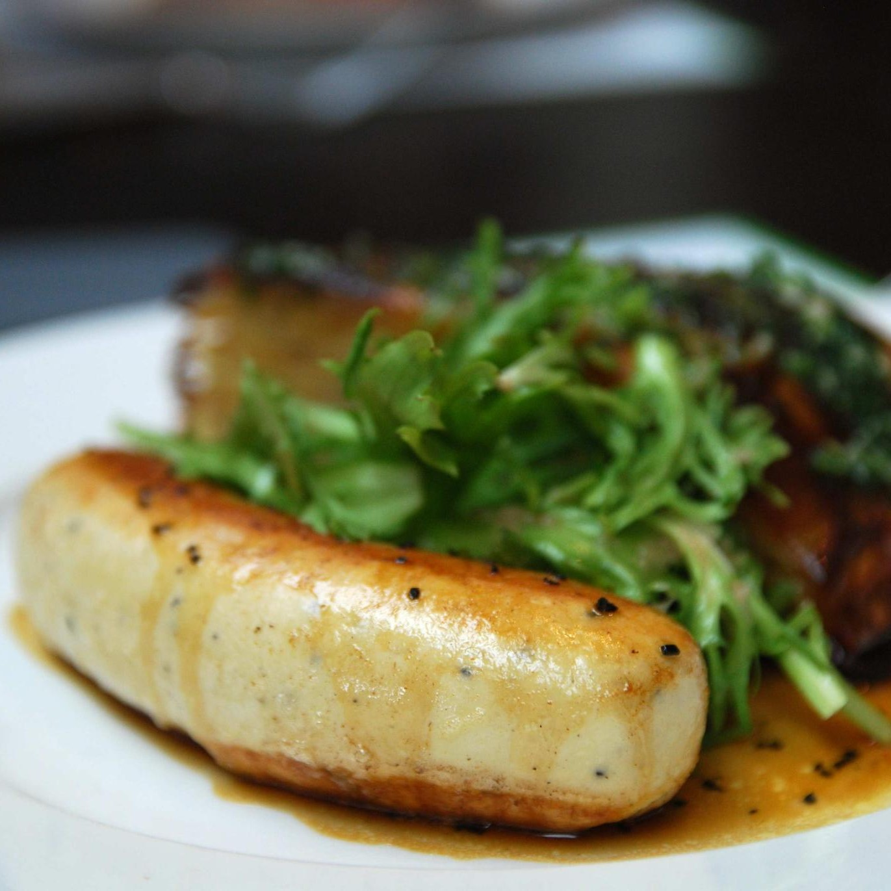
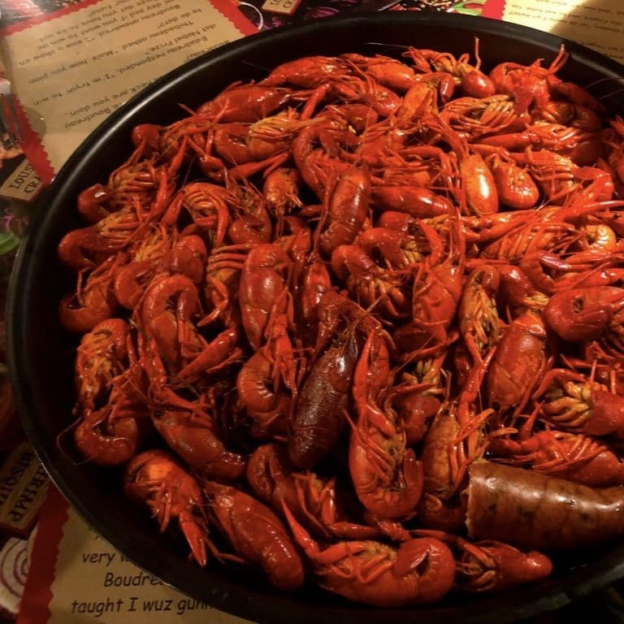
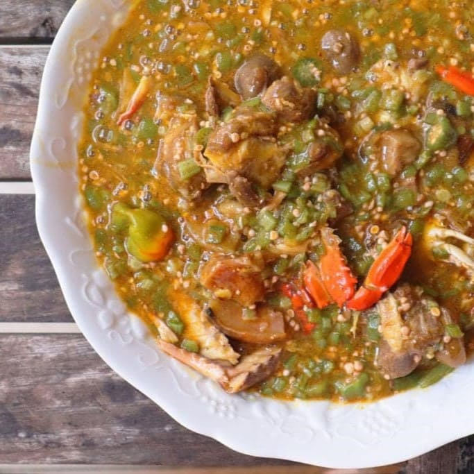
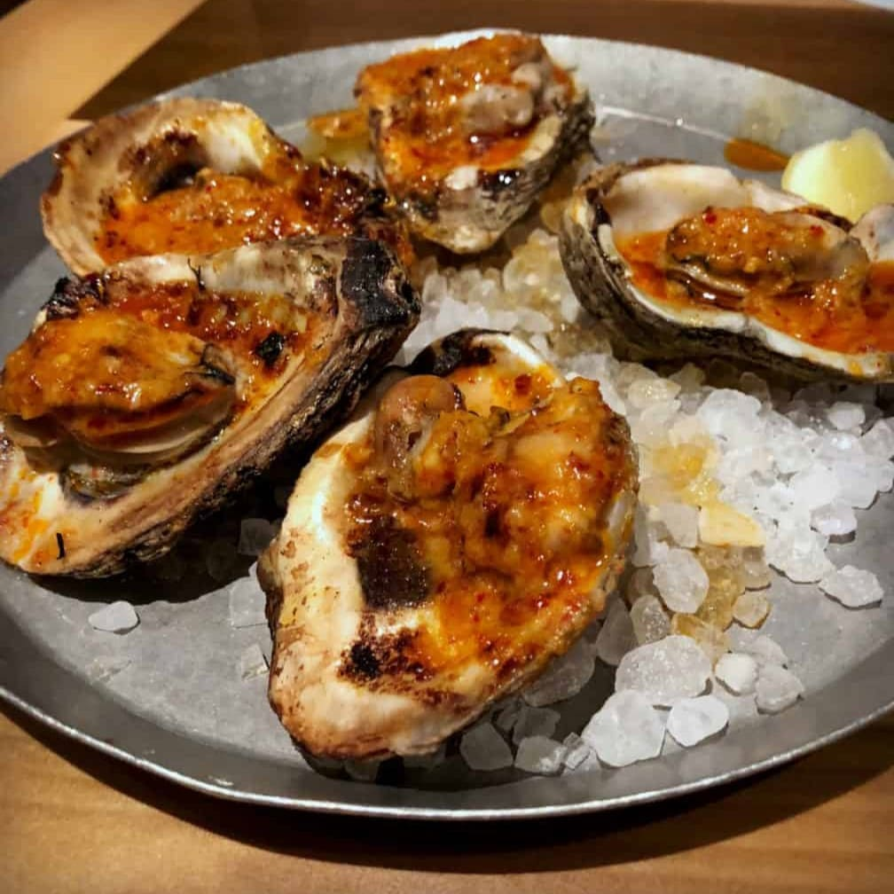
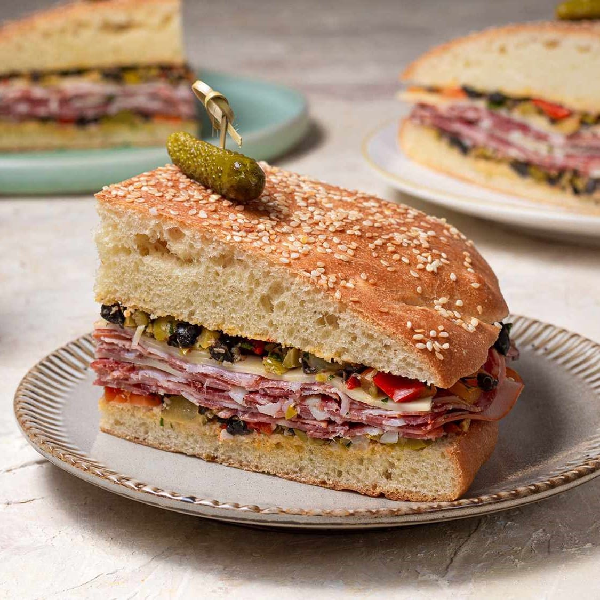

Nourrissez votre âme avec la cuisine, la musique et la culture uniques de la Louisiane
La Louisiane n’est pas un lieu pas comme les autres. Depuis des siècles, de nombreuses cultures ont élu domicile en Louisiane et ont contribué à l’histoire profonde et haute en couleur de l’État. Les cultures française, espagnole, allemande, italienne, africaine et indigène américaine sont profondément ancrées en Louisiane et s’accompagnent de saveurs uniques, de musique légendaire et de traditions ancestrales. Ajoutez à cela les paysages grandioses de l’État, ainsi qu’une nature luxuriante et vous comprendrez pourquoi la Louisiane sait combler tous les voyageurs. La Louisiane n’est pas faite pour être contemplée mais pour être vécue, alors ne vous contentez pas de simples souvenirs mais plongez la tête la première dans sa riche culture pour faire le plein de sourires.
En Louisiane et nulle part ailleurs
Des cuivres aux bayous, des po’boys aux pralines et du jazz au jambalaya, ce ne sont pas les expériences qui manquent en Louisiane. Venez découvrir des sites, des sons et des saveurs que vous ne trouverez nulle part ailleurs dans le monde et que les habitants du coin appellent la joie de vivre. À chaque étape de votre parcours, des étrangers deviendront vos amis. Partez à la découverte des marais dans le cadre d’excursions passionnantes, visitez des musées extraordinaires, des sites historiques fascinants, de grandes brasseries artisanales et des parcs d’État paisibles tout en profitant d’hébergements charmants et de bien d’autres lieux incontournables.
Lieux incontournables


La gastronomie en Louisiane
Certains gourmets hésiteront certainement à suivre les recommandations d'une bonne cuisinière cajun, mais elle saura toujours parfaitement transformer un alligator, un rat musqué et même un tatou en plat délicieux. Les Cajuns sont fiers, et à juste titre, de posséder une véritable tradition culinaire : une synthèse des traditions gastronomiques française, espagnole, antillaise, adaptée aux produits de base des bayous, véritable garde-manger : riz (les Cajuns en consomment 2 fois plus que le reste des Américains), coquillages, poissons, crustacés (crevettes, crabes, écrevisses)... avec de nombreux accords terre-mer. La base de la cuisine cajun est le roux : un mélange d’huile et de farine que l’on fait roussir sur le feu avant de lui incorporer un bouillon épicé. Toutes les sauces partent de cette recette. Pas très light, tout ça...
- Spécialité cajun, c’est une saucisse de porc, d’oignon, de riz et d’épices.
- Un grand favori du voyage! L’étouffée est composée d’écrevisses écaillées (yes!) et d’une savoureuse sauce épicée, le tout servi sur du riz. C’est un régal.
- Plat de la cuisine créole, le gombo est une soupe très épaisse, servie avec riz, fruits de mer ou viandes.
- Les huîtres Rockfeller ont été inventées au restaurant Chez Antoine. l’endroit est effectivement très beau, au charme suranné et lié à l’histoire de la ville.
- Le muffulata est l’autre sandwich iconique de la Nouvelle-Orléans.
 Contraction des mots Poor Boy, il s’agit d’un sandwich composé
de crevettes de panées. Dites-vous que si la garniture du po-boy déborde dans l’assiette, c’est que
c’est réussi.
Contraction des mots Poor Boy, il s’agit d’un sandwich composé
de crevettes de panées. Dites-vous que si la garniture du po-boy déborde dans l’assiette, c’est que
c’est réussi.